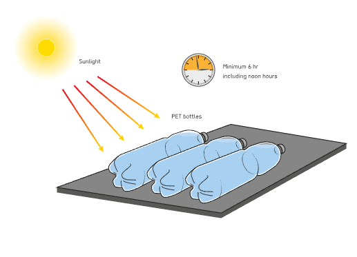

Problem Statement
The purpose of this study is to determine and compare the effects of moringa (M. oleifera), tamarind (T. indica), and jackfruit (A. heterophyllus) seed extracts on water turbidity (NTU), dissolved oxygen (mg/L), and pH when used in solar water disinfection of Poso water (manual water pump), with a treatment duration of 6 hours, while using positive control (distilled water) and negative control (untreated poso water) setups.
Objectives
This study aims to achieve the following objectives:
- To measure the turbidity (NTU), dissolved oxygen (mg/L), and pH of Poso water during 6 hours of Solar Water Disinfection (SODIS) with the application of moringa (M. oleifera), tamarind (T. indica), and jackfruit (A. heterophyllus) seed extracts.
- To compare the effectiveness of the three seed extracts in improving water quality parameters after 6 hours of SODIS against positive and negative control setups.

Hypothesis
If moringa (M. oleifera), tamarind (T. indica), and jackfruit (A. heterophyllus) seed extracts are used as natural coagulants during 6 hours of Solar Water Disinfection (SODIS), then turbidity will decrease while maintaining stable pH and dissolved oxygen levels.